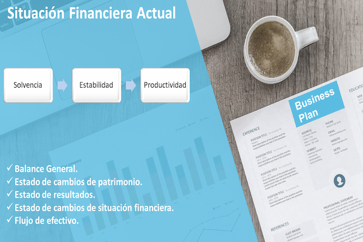

“Los estados financieros son como
un perfume fino,
hay que olerlo, pero sin abusar”
Abraham Brilloff
Planificación Financiera. Una introducción
Las finanzas tanto personales como empresariales son el punto medular de acción para satisfacer una gran cantidad de necesidades "jerarquizadas" con unos recursos limitados y en condiciones de incertidumbre. De importancia estratégica para desenvolvernos en el presente, desarrollarnos en el camino, y crecer en el futuro. De la necesidad de visualizar "hoy" el desarrollo en el camino (corto plazo) y el crecimiento en el futuro (largo plazo) nace la Planificación. Se puede entender a la Planificación Financiera, como el desarrollo del plan para que una empresa alcance sus metas y objetivos estratégicos una vez establecidas su Misión y Visión. El Plan Financiero trazará el camino a seguir y describe cada una de las actividades, recursos, equipos y materiales necesarios para lograr estos objetivos, así como los plazos involucrados. El proceso de la Planificación Financiera, tratará de proyectar en términos monetarios el resultado futuro que se pretende alcanzar intentando identificar los recursos que necesita para lograrlo. No un solo camino o escenario rígido sino un abanico de posibilidades, opciones y alternativas que varían en función del impacto del entorno económico, político, financiero o de mercado que rodea a la empresa.
Las PYMEs y la Planificación Financiera. Una mala relación
En los estudios que se han realizado para el Sector de las PYMEs en relación a la gestión financiera los resultados obtenidos no son halagadores. La mayoría presenta debilidades en el manejo de sus finanzas. Así lo revela un estudio realizado por Axa Seguros (México, 2016) donde casi el 40% no recibe ninguna asesoría profesional al realizar la planificación financiera. En ese país ocho (8) de cada diez (10) Pymes no superan los dos años de vida, y 43% de estos casos se deben a una mala administración financiera.
Para el Especialista en Finanzas Raúl Cardona (2009), y su trabajo titulado "Planificación financiera en las PYMEs exportadoras Caso de Antioquia, Colombia", el resultado concluye que las organizaciones analizadas siguen caracterizándose por su debilidad en la forma como se planean las decisiones financieras correspondientes a la inversión, financiación y reparto de utilidades.
En el caso venezolano, para Guillermo, Adrian (2018) en su Trabajo de Grado titulado "Planificación Financiera de Tesorería para el Flujo Tributario en el Sector Empresarial Bajo Situación de Incertidumbre", presentado para optar al título de Magister en Administración de empresas, Mención Finanzas en la Universidad de Carabobo, en el sector manufacturero del Estado Aragua existen debilidades importantes en la planificación financiera, ya que se demuestra que no poseen una herramienta para realizar una proyección sobre los resultados que se desean alcanzar por las empresas, que permita estudiar la relación entre proyecciones de ventas, ingresos, activos, inversiones y financiamiento para el pago de la carga tributaria, tomando como base estrategias alternativas de producción y mercadotecnia, para luego decidir cuál será la mejor forma de satisfacer los requerimientos financieros.
La Planificación Financiera. Razones para implementarla
El mundo acelera el avance tecnológico de sistemas automatizados factores que incentivan la competencia entre empresas por una mayor participación de mercado. Estos mecanismos buscan medir resultados operativos y financieros para permitir decidir con rapidez ante fluctuaciones o desvíos de la empresa y reaccionar ante el entorno económico o de mercado tratando de garantizar eficiencia en el uso de recursos ante distintos escenarios.
En este sentido, la planificación financiera se posiciona como una herramienta estratégica por su potencial de generar escenarios futuros, adaptarse al entorno actual y trazar las estrategias para alcanzar cada uno de los objetivos que requiere la empresa para establecerse en el corto plazo y fijar las bases para alcanzar su maduración futura.
En esto radica la importancia de implementar los instrumentos necesarios de planificación que proporcionen las herramientas de medición, análisis y control para la toma de decisiones.
Igualmente, la implementación de la Planificación Financiera optimizará el proceso para la toma de decisiones en relación a la situación de mercado, el estudio de la composición de activos y el conjunto de la estructuración de la financiación (pasivo), reestructuración de los indicadores financieros, proyecciones a corto, mediano y largo plazo, rendimiento actual y posibilidades futuras mejorando las ventajas competitivas adaptándose a nuevas realidades conduciendo mejor en la carretera de la incertidumbre.
Objetivos de la Planificación Financiera
1-. Determinar los requisitos de capital: esto dependerá de factores como el costo de los activos fijos y corrientes, los gastos de promoción y la planificación a largo plazo. Los requisitos de capital deben considerarse con ambos aspectos: requisitos a corto y largo plazo.
2. Señalar la estructura de capital: la estructura de capital es la composición del capital, es decir, el tipo relativo y la proporción de capital requerido en el negocio. Esto incluye decisiones sobre la relación deuda-capital, tanto a corto como a largo plazo.
3. Enmarcar políticas financieras con respecto al control de caja, préstamos, gastos, etc.
4. Optimizar la gestión de finanzas garantizando que los escasos recursos financieros se utilicen al máximo de la mejor manera posible al menor costo para obtener el mejor rendimiento de la inversión.
Importancia de la Planificación Financiera
La planificación financiera es el proceso de enmarcar objetivos, políticas, procedimientos, programas y presupuestos con respecto a las actividades financieras. Esto asegura políticas financieras y de inversión efectivas y adecuadas. La importancia se puede resumir en:
1. Debe asegurar fondos suficientes.
2. Ayuda a garantizar un equilibrio razonable entre la salida y la entrada de fondos para que se mantenga la estabilidad.
3. Garantiza que los proveedores de fondos inviertan fácilmente en empresas que ejercen la planificación financiera.
4. Facilita realizar programas de crecimiento y expansión que ayudan a la supervivencia a largo plazo de la empresa.
5. Reduce las incertidumbres con respecto a las tendencias cambiantes del mercado que se pueden enfrentar fácilmente con fondos suficientes.
6. Asegura reducir el riesgo que puede ser un obstáculo para el crecimiento de la empresa. Esto ayuda a garantizar la estabilidad y la rentabilidad en cuestión.
Planificación Financiera en economías hiperinflacionarias:
Servicio de Asesoría en Planificación Financiera. Modelo propuesto para emprendimientos
De manera general cuando hablamos de Planificación Financiera nos referimos a un análisis detallado de las finanzas que comienza con la situación actual a través de los diferentes estados financieros. Tomando elementos de la planificación estratégica se establecen objetivos para finalizar con el desarrollo de un plan y lograrlos uno a uno en diferentes momentos o temporalidades.
Puede parecer bastante sencillo en primeras líneas o en vista preliminar, sin embargo, de no tener experiencia o contar con el apoyo necesario se puede convertir en un proceso complicado que termine con errores o resultados inalcanzables. Y se decida seguir llevando el negocio como lo han venido haciendo pensando que es más práctico así.
Tener un Plan Financiero en el negocio no solo permite controlar la situación financiera y minimizar riesgos, sino que ofrece alternativas para hacer crecer el patrimonio y es una de las bases principales para el alcance de objetivos empresariales.
He tenido la oportunidad de participar en la elaboración de planes financieros y puedo concluir que no existe un "proceso rígido" en esta área, sino que evoluciona con el tiempo y se adapta a los cambios de cada empresa, el principio fundamental es eligir un punto de partida y trazar una ruta inicial.
En este sentido, para la Planificación Financiera existen varios modelos teóricos en el área de las finanzas corporativas probados por grandes empresas y escuelas de negocio, uno de los más usados y que resulta adaptable a diferentes situaciones "complejas" y demostró ser la opción acertada entre varias es el modelo de Nissenbaum, Raasch & Ratner.
Modelo de Nissenbaum, Raasch & Ratner (Ernst & Young)
Nissenbaum, Raasch y Ratner (2004) proponen un modelo de planeación financiero que le permite a la persona o a la organización realizar una planeación financiera eficiente, gracias a la división del proceso en pasos claramente diferenciados y con un producto específico que sirve como insumo para el paso siguiente. En resumen estos son los puntos claves del modelo o los 7 pasos fundamentales:
Contenido de la Planificación Financiera

Situación Financiera
El primer paso establecido en este modelo plantea la necesidad de identificar y medir la posición financiera que en la actualidad presenta la persona o la organización.
Planificación Financiera
Determinar la situación financiera actual
El primer paso establecido en este modelo plantea la necesidad de identificar y medir la posición financiera que en la actualidad presenta la persona o la organización, fundamentada en el análisis del patrimonio neto y de los flujos de caja presentados, como insumo para determinar los objetivos del proceso de planeación.
Establecer Objetivos
Depende directamente de los resultados del primero y consiste en un ejercicio de visualización de corto o mediano plazo donde se establece cual es la posición que desea tener en términos financieros.
Planificación Financiera
Establecer Objetivos
Depende directamente de los resultados del primero y consiste en un ejercicio de visualización de corto o mediano plazo donde se establece cual es la posición que desea tener en términos financieros. Como resultado de este paso se deben obtener los objetivos financieros jerarquizados por nivel de importancia y se debe determinar el plazo de logro de estos objetivos.
Plan Financiero
Desarrollo y concepción de un plan flexible, que tenga en consideración la conservación de la liquidez y minimice el efecto tributario en el logro de los objetivos.
Planificación Financiera
Desarrollar Plan
Desarrollo y concepción de un plan flexible, que tenga en consideración la conservación de la liquidez y minimice el efecto tributario en el logro de los objetivos. Cuando se utiliza la palabra flexibilidad se hace referencia a la capacidad de cambio y adaptación ante fenómenos inesperados en el entorno.
Registros simples
Implementar registros simples, pero con el nivel de detalle suficiente para servir como elemento de control. Estos registros deben permitir entender cómo, dónde y a qué velocidad se consumen los recursos monetarios al interior de la organización.
Planificación Financiera
Registros simples
Implementar registros simples, pero con el nivel de detalle suficiente para servir como elemento de control. Estos registros deben permitir entender cómo, dónde y a qué velocidad se consumen los recursos monetarios al interior de la organización. Discriminar el flujo de caja por categorías es una estrategia que permite visualizar las áreas que deben ser mejoradas en la organización.
Estructurar Presupuesto
El quinto paso consiste en la estructuración de un presupuesto que será el referente para el control de los ingresos y gastos futuros.
Planificación Financiera
Estructurar Presupuesto
El quinto paso consiste en la estructuración de un presupuesto que será el referente para el control de los ingresos y gastos futuros. La elaboración y ejecución del presupuesto se concibe como un proceso continuo y coherente con los parámetros establecidos en pasos anteriores.
Hacer frente al crédito o escasez
Conjunto de acciones que son diseñadas con la finalidad de enfrentar los problemas que acarrea la escasez de efectivo y los problemas inherentes a la capacidad de endeudamiento.
Planificación Financiera
Hacer frente al crédito o escasez
Conjunto de acciones que son diseñadas con la finalidad de enfrentar los problemas que acarrea la escasez de efectivo y los problemas inherentes a la capacidad de endeudamiento. El análisis efectuado en este paso tiene como finalidad analizar el nivel que posee la deuda y las implicaciones que esta posee a nivel de costos e impuestos.
Revisar el progreso
El proceso de planeación financiera debe estar sujeto a un proceso de revisión constante para que de esta forma se puedan identificar cambios o variaciones desfavorables.
Planificación Financiera
Revisar el progreso
El proceso de planeación financiera debe estar sujeto a un proceso de revisión constante para que de esta forma se puedan identificar cambios o variaciones desfavorables que afecten de manera crítica la planeación realizada y así poder hacer los ajustes del caso.
Propuesta de Valor del Servicio de Planificación Financiera:
¿Qué es la Planificación Financiera?
Es el proceso de buscar alcanzar las metas personales o empresariales mediante la administración adecuada de las finanzas. La planificación financiera ayuda a hacer provisiones anticipadas para las necesidades financieras que surgirán en el futuro.
¿Porqué debería hacer un Plan Financiero?
La planificación financiera proporciona dirección y significado a las decisiones financieras. Permite comprender cómo cada decisión financiera que se toma afecta otras áreas de las finanzas.
¿Qué es un Planificador Financiero?
Es alguien que utiliza el proceso de planificación financiera para ayudar a determinar cómo alcanzar metas personales o empresariales. La función clave de un planificador financiero es ayudar a identificar las necesidades de planificación financiera, prioridades actuales y los productos que son más adecuados para satisfacerlas.
¿Cuándo llamar a un Planificador Financiero?
Puede decidir buscar la ayuda de un planificador financiero profesional si:
1. Siente que su equipo aumentará efectividad con ayuda externa para la elaboración de los procesos de control de gestión, planificación estratégica y financiera adecuándolos a un calendario de entrega.
2. Necesita apoyo para su equipo de finanzas en la elaboración de herramientas financieras inteligentes para medir, controlar y revisar comportamientos, hacer comparativas y darle otra perspectiva a sus números.
3. Sabe que necesita mejorar su situación financiera actual, pero no sabe por dónde empezar.
4. Siente que un asesor profesional podría ayudarlo a mejorar la forma en que administra actualmente sus finanzas.
5. Desea obtener otra opinión profesional sobre el plan financiero que tiene desarrollado distinta a la de su equipo financiero.
¿Qué debo buscar en un Planificador Financiero?
Un planificador financiero funciona para usted. La lealtad debe ser hacia el cliente, no hacia el producto o productos que se está tratando de vender. Un planificador independiente es la mejor manera de obtener un asesoramiento objetivo. No tenemos limitaciones ni requisitos para utilizar algún producto o solución de inversión específica; esto nos permite crear planes financieros personalizados diseñados para brindar ingresos y crecimiento a nuestros clientes.
¿Cuál es la diferencia entre un Planificador Financiero y un Asesor?
Un planificador financiero es un profesional que ayuda a empresas e individuos a crear un programa para alcanzar objetivos financieros a largo plazo . Asesor financiero es un término más amplio para aquellos que ayudan a administrar su dinero, incluidas las inversiones y otras cuentas.
¿Cuánto tiempo se tarda realizar un Plan Financiero?
Varía en función de muchos factores sin embargo, el plan promedio normalmente se termina en aproximadamente 90 días. Aunque se puede acortar este período de tiempo si se solicita, la mayoría de las empresas prefieren tener el tiempo adecuado entre reuniones para incorporar las recomendaciones de planificación a medida que ocurren durante el proceso de planificación.
¿La Planificación Financiera incluye el Presupuesto?
Si, el presupuesto concluye con la planificación financiera, es la herramienta final que permitirá hacer el seguimiento para el alcance de objetivos. El presupuesto financiero es la cuantificación monetaria de los objetivos estratégicos. El servicio incluye los tres Estados Financieros principales presupuestados, además de los indicadores.
¿Porqué considerar el Flujo de Caja es un paso importante en la Planificación Financiera?
En el nivel más fundamental, la capacidad de una empresa para crear valor para los accionistas está determinada por su capacidad para generar flujos de efectivo positivos, o más específicamente, maximizar el flujo de efectivo libre a largo plazo.
¿Conoces mis servicios?
Aliados Estratégicos
Consultor integral de negocios con experiencia en estrategia, procesos, planificación financiera y fiscal para América Latina. Mentoria gerencial y liderazgo.
Leonel Valdespino-
Consultor Empresarial
La estabilidad financiera de una empresa depende de la buena gestión de su contador en el manejo contable de las finanzas obteniendo resultados que mejoren su productividad.
Betzi Pacheco-
Asesora Empresarial
Asesorías en riesgo, prevención de riesgos y ofrecezco los mejores servicios y coberturas de seguro adaptadas a las necesidades del cliente e índole del negocio.
Belkys Velasco-
Agente de Seguros
Iniciativa y buena comunicación, capacidad para liderar equipos de trabajo. Con experiencia en planificación y control de gestión, dispocisión gerencial.
Riwil Fuentes-
Planificación Estratégica
PARA COMENZAR A DESARROLLAR TU PLAN
Te anexo las formas de comunicación disponibles
Caracas, Venezuela
JesusZerpaEconomia@gmail.com
+58 212 3255275
"No importa cuán brillante sea tu mente o tu estrategia, si juegas en solitario, siempre perderás frente a un equipo."